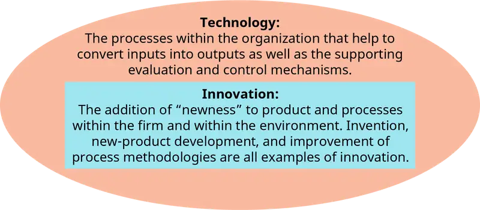
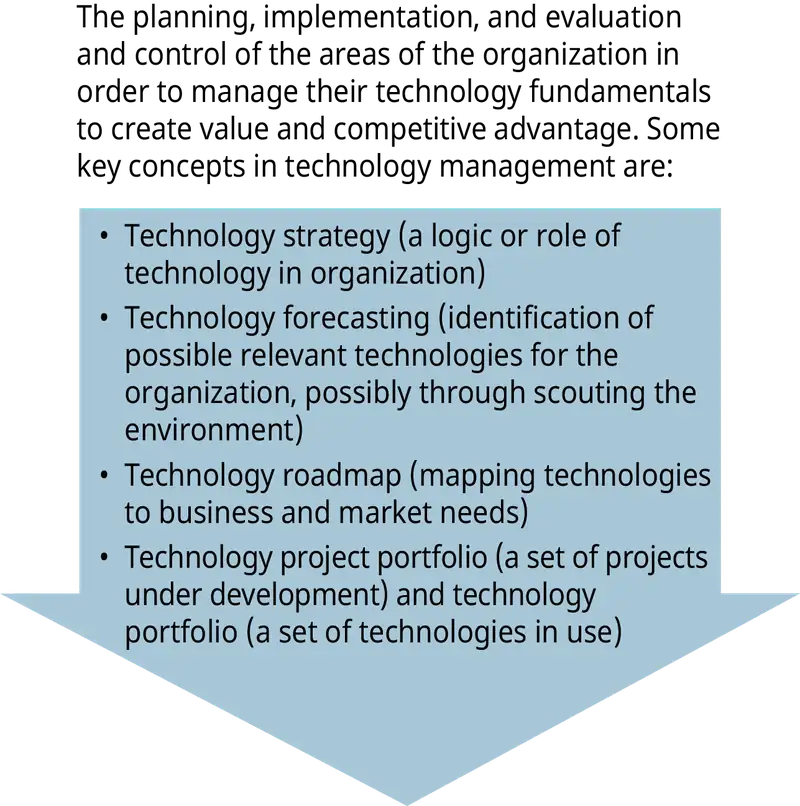
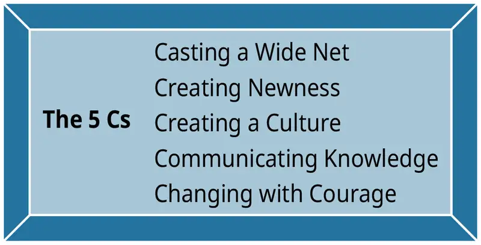
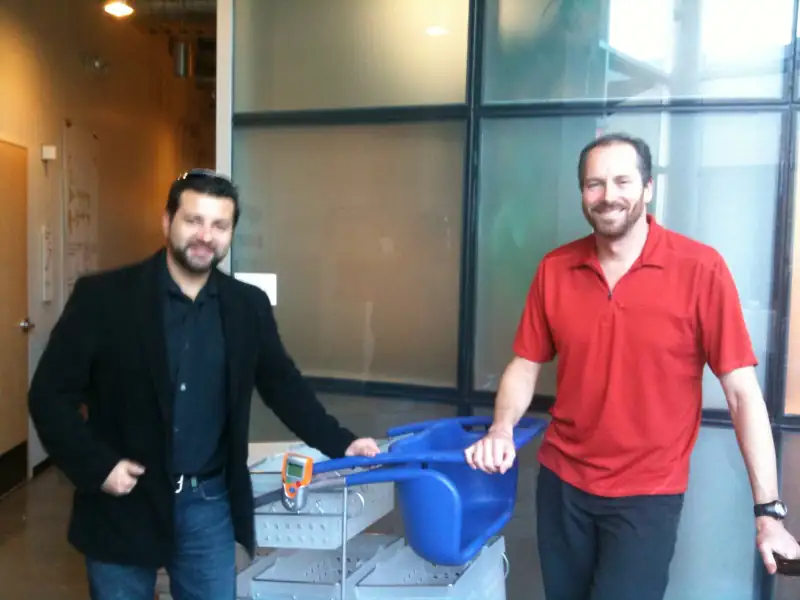
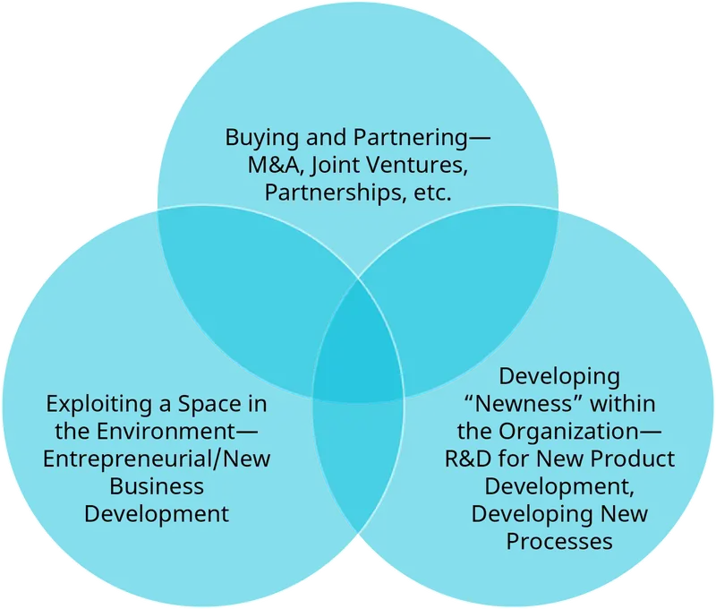
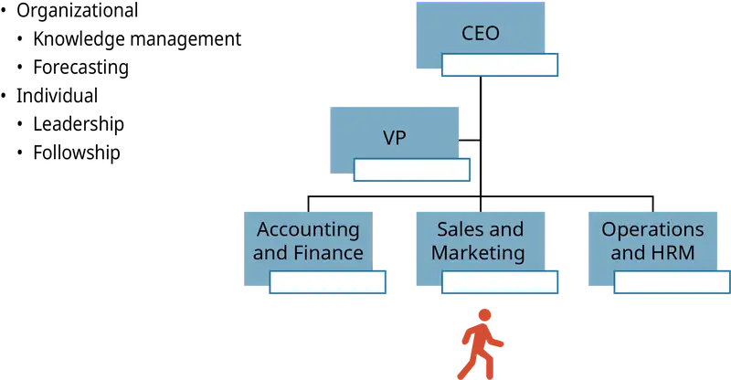

Chapter 18: Management of Technology and Innovation¶
Introduction¶
Learning Outcome
After reading this chapter, you should be able to answer these questions:
- What do we mean by management of technology and innovation (MTI), and why is it crucial?
- How do organizations develop technology and innovation?
- What are external sources of technology and innovation development, and when are they best used?
- What are internal sources of technology and innovation development, and when are they best used?
- How and why do entrepreneurs develop MTI skills?
- No matter what method is used, what skills do you need to successfully manage technology and innovation?
- How do you look into the future to keep pace?
Exploring Managerial Careers: Acer Group—Becoming a Hardware + Software + Services Global Competitor
Do you think that you would be interested in a career in the technology space? Here is an overview of the history of Acer Corporation that will provide a glimpse into this industry. Acer Group was established in 1976. The Acer Group’s family of brands includes Acer, Gateway, Packard Bell, and eMachines. The multibrand strategy of Acer allows each brand to target different customer needs in the worldwide personal computer market. Acer was the third-largest maker of personal computers (second largest in notebooks) in 2008 and had revenues exceeding $16 billion. In 2017, Acer is sixth in the personal computer industry with revenues exceeding $70 billion. This Taiwanese firm has established itself as a global player in the PC market and has expanded into gaming and other related businesses. How it got there is through innovative use of alliances and acquisitions as well as forward-looking development within the firm.
The Firm’s History
Acer was founded in 1976 as Multitech. The focus of Multitech was on trade and product design (internal innovation). Just three years later, Multitech designed Taiwan’s first mass-produced computer product. The focus from the start was on a product for export—Taiwan is such a small market the firm knew it needed to make a global footprint in the computer market. Multitech, which became Acer in 1987, developed a long-term mission to allow anyone to use and benefit from technology. They have built their reputation on development and manufacturing of sophisticated, intuitive, easy-to-use products.
Early Innovations
When Multitech first started, the PC market was young and the founders saw many opportunities. Acer holds more patents than any other Taiwanese-based corporation, and Taiwan accounts for 70 percent of global computer hardware manufacturing. When Acer beat IBM to the market with 32-bit PCs in 1986, it signaled the beginning of the end for IBM’s PC business. Until 1990, Acer was more internally innovative than it was externally oriented for alliances and acquisitions.
External Technology Development
In 1990, Altos Peripherals was acquired. This marked the beginning of two decades of multiple alliances and acquisitions by Acer. Because of Acer’s success in developing innovations, other companies were willing and eager to development different types of alliances. Some of the early alliances allowed Acer to partner with some of the biggest players in the computer technology industry. For example:
- 1996—Acer signed a reciprocal patent licensing agreement with IBM, Intel, and Texas Instruments allowing use of one other’s patented technology.
- 1999—Acer Group and IBM formed a seven-year procurement and technology alliance.
This strategy has continued:
- 2010—Acer and Founder Technology signed a memorandum of mutual understanding to strengthen their long-term PC business cooperation.
- 2016—Acer’s board of directors approved the establishment of a joint venture with Starbreeze AB to design, manufacture, promote, market, and serve StarVR Virtual Reality Head-Mounted Displays.
As Acer grew in strength in the marketplace, it began to make acquisitions. These acquisitions were aimed at multibranding as well as obtaining technological innovations. For example:
- 1998—Acer acquired Texas Instruments’ TI-Acer interest and renamed the company Acer Semiconductor Manufacturing Inc.
- 2007—Acer merged with Gateway Inc.
- 2008—Acer merged with Packard Bell Inc.
- 2008—Acer acquired E-TEN.
- 2015—Acer acquired GPS cycling computer brand Xplova.
- 2016—Acer acquired wireless pet camera maker Pawbo.
To illustrate the usefulness of this strategy, in 2011 Acer Inc. bought iGware Inc. for $320 million to try to enter the potentially lucrative cloud market. Then in 2012, Acer created cloud software and infrastructure tools for devices.
Acer also developed equity-based partnerships. Examples of this strategy include:
- 2009—Acer acquired 29.9% of Olidata.
- 2015—Acer invested in robotics start-up company Jibo.
- 2016—Acer made an equity investment in grandPad, a provider of technology solutions specifically designed for senior citizens.
- 2017—Acer became largest corporate shareholder of AOPEN Inc.
Becoming a Global Competitor
While Acer was changing its business model from internal innovations as well as evolving from a manufacturing company to a development and marketing firm, it continued to spread its global footprint. It did this through various partnerships and by developing innovative products with its partners and within its own R&D areas. For example, in 2003 Acer launched the Empowering Technology Platform to meld hardware, software, and service to provide end-to-end technologies to customers. In 2008, the Aspire One was launched as the company’s first mobile Internet device. In addition, Acer made a strong move into the high-end gaming market with the Aspire Predator series.
These steps were designed to enhance and strengthen Acer’s global position. Acer’s product range includes PC notebooks and netbooks, desktop computers, storage systems, peripheral devices, LCD televisions, and e-business solutions. The firm is number one in a number of markets with various products. The Europe, Middle East, and Africa (EMEA) market is a stronghold for Acer’s mobile computing solutions. Acer is the largest supplier of LCD televisions in Western Europe. Acer is first in the notebook market in Italy, Spain, Austria, Holland, Switzerland, Russia, Belgium, Denmark, Hungary, Poland, and the Slovakian Republic.
In the United States and Canada, Acer is making its mark through its Channel Business Model (CBM). It developed this model as it expanded beyond Taiwan and continued to improve it as it divested its manufacturing facilities. This model allows Acer to be flexible in adapting to global IT market trends. CBM involves collaboration with partners and suppliers to develop and market top-tier products and services. In 2003, they used this model to co-brand a notebook computer with Ferrari, the Italian carmaker.
In 2009, Acer unveiled the Acer F900 and M900 smartphones at the Mobile World Congress. They began by shipping to channel partners in EMEA and Asia. These products have a relatively large 3.8-inch-wide VGA display and a 3.75G HSPA connectivity for high-speed data transfer, and they are the introductory products with Acer’s new widget-based user interface that provides easy navigation with vivid 3D animation. The acquisition of Packard Bell was key to Acer’s entrance into this market with this advanced product.
From 2008 to 2013, Acer’s strategy was to enhance worldwide presence with a new multibrand strategy. With the successful completion of the mergers of Gateway and Packard Bell, Acer then heavily emphasized its goal to further strengthen its global footprint with a multibrand strategy and solid partnerships. Since 2014, the Acer Group has been transforming into a hardware + software + services company.
To accomplish this shift, Acer needed to spin off or divest certain units. This accomplished two things: 1) it made cash available for acquisitions and other new business development, and 2) it refocused the strategy of Acer.
Examples of the spin-offs and divestments included:
- 2000—Acer spun off its manufacturing operation to focus on developing technologically advanced, user-friendly solutions.
- 2000—Acer split off its OEM (Original Equipment Manufacturing) business unit to create Wistron Corp., an independent design and IT manufacturing company.
Acer continues to lead in notebook technology while extending its product lines to enhance people’s lives through technology. In notebook technology, Acer was the leader in branding notebooks (Ferrari 4000 carbon-fiber notebook—2005), green notebooks (2010), and lightest notebook with the longest battery life (Aspire line—2012), as well as the Chromebook launch in 2015 with a 15.6-inch screen. However, its product lines have multiplied into cloud technology, gaming, and other technologies that “add value to customers’ lives” (Acer annual report).
Acer has used a variety of strategic moves to continue to be competitive in the changing world of computer-related technology. Early on, they used internal innovation as a primary growth strategy to build reputation and establish a footprint in the industry. Then they used external methods of acquiring technology and markets—mergers, acquisitions, alliances, joint ventures, equity positions, etc. Acer continues to nurture its strengths in research and development while continuing to look for new opportunities for acquisition and alliances.
Sources: Anonymous. 2009. Acer website , “Showcases Multi-brand Products at Computex 2009 including Aspire Timeline Notebook, Aspire One Netbook, Aspire All-In-One PC.” JCN Newswire- Japan Corporate News Network. Tokyo, June 3, 2018; www.acer-group.com; Acer Group 10-K reports.
18.1 MTI—Its Importance Now and In the Future¶
- What do we mean by management of technology and innovation (MTI), and why is it crucial?
Management of technology and innovation is critical to the organization. Because of innovations and new technologies, we have historically seen the emergence of innovative organizational structures and new ways of performing work. For example, the Industrial Revolution ushered in the functional structure for organizations. As business moved from small craft businesses like Black peoplemiths to railroads, there was a need to introduce a more complex business structure. Today, we see the innovations in information technology changing structures to more network based with people being able to work remotely. The changes in structure are innovations in the technology of how work is accomplished; the innovations brought on by the invention of new products influence the technology we use and how we use it.

Technology can be defined in a number of ways. The basic purpose of a system (such as an organization) is to convert inputs into outputs. Therefore, we will define organizational technology as the processes within the organization that help to convert inputs into outputs as well as the supporting evaluation and control mechanisms. The management of technology involves the planning, implementation, evaluation, and control of the organization’s resources and capabilities in order to create value and competitive advantage. This involves managing:

- Technology strategy—the logic of how technology will be used and what role technology will have in the organization. For example, will innovation (first-to-market strategies dominate) be the focus, or will the firm want to do things better to obtain market share and value (let others take the initial risks)?
- Technology forecasting—the use of tools to study the environment for potential technological changes that can both positively and negatively affect the firm’s value proposition. Digitization of a variety of products such as watches and cameras provided great opportunities for some firms and caused others to go bankrupt. Forecasting (or at least keeping an eye on the changes in technology) is very important in management of technology.
- Technology roadmapping—the process of taking an innovation or technology and trying to build more value by looking for ways to use the technology in different markets and places.
- Technology project portfolio—the use of portfolio techniques in development and use of technology enhances the potential value of technologies being developed and the technologies that are currently part of a firm’s portfolio. Disney was a leading producer of animated films. However, Disney did not stop there—the portfolio of characters in the films are now marketed as products and displayed in Disney theme parks, and Disney very carefully manages the availability of the animated films.
Innovation activities are an important subset of technology activities. Innovation includes “newness” in the development and use of products and/or processes within a firm and within an industry. Invention, new product development, and process-improvement methods are all examples of innovation. Management of innovation includes both change management and managing organizational processes that encourage innovation. The management of innovation is more than just planning new products, services, brand extensions, or technology inventions—it is about imagining, mobilizing, and competing in new ways. For the organization, innovation management involves setting up systems and processes that allow newness that adds value to emerge. Some firms, like Google and 3M, give some employees time during the workweek to work on their own ideas with the hope of sparking new ideas that will add value. Google News and 3M Post-it Notes are products that emerged from this practice. In order to manage innovation processes successfully, the firm must undertake several activities (these can involve the study of technologies currently in use).

- Casting a wide net while trying to keep up with potential changes in the firm, the market, the competition, etc. is crucial. Eastman Kodak was the dominant U.S. camera manufacturer. On several occasions in their history they missed opportunities to take advantage of innovations in their product line—they did not cast their net out. Land, the founder of Polaroid, went to Kodak with his invention of instant photographs—Kodak said no. Kodak did not see the telephone as a potential competitor until it was too late. Kodak was especially vulnerable because the firm was a late entrant into the digital camera market. As a result of failure to cast a wide net in keeping up with trends and innovations, Kodak went bankrupt.
- Creating newness with existing products can expand the portfolio of value of a product. 3M has done this with all kinds of tape and with different formats and forms of Post-it Notes. Asking “how else can the product be altered or used?” is critical to developing platforms of products.
- Creating a culture open to newness is critical to cultivating ideas. If the leadership of the firm is open to ideas from all over the organization, then the firm will be more innovative. Some large firms such as Texas Instruments encourage employees to start new businesses if TI does not want to keep a product in house. Often, TI is the first investor and customer of these small firms.
- Communicating knowledge throughout the firm is important. This knowledge can be positive and negative at first glance. For Post-it Notes, the glue used emerged from the laboratory efforts to create a stronger glue to compete with Elmer’s Super Glue. Obviously, the outcome did not meet the original goal, but the communication of the new formula’s characteristics—tacky and leaves no residue—triggered other usage.
- Changing with courage is necessary if a firm is going to manage innovation and stay competitive. Too often firms get comfortable with where they are, narrow their focus in studying the environment, and focus on building strength in their current market. This leads to strategic inertia—not innovating and losing customers and market share to more innovative companies. Just as Kodak failed to change, so did IBM—famously, the CEO of IBM was quoted as saying “who wants a computer on their desk?” as IBM continued manufacturing mainframes while desktops and then laptops were emerging.
Managing Change: E-Hubs Integrate Global Commerce
Thanks to the wonders of technological advancement, global electronic trading now goes far beyond the Internet retailing and trading that we are all familiar with. Special websites known as trading hubs, or eMarketplaces, facilitate electronic commerce between businesses in specific industries such as automotive manufacturing, retailing, telecom provisioning, aerospace, financial products and services, and more. Virtually all Forex (foreign exchange) is done via trading hubs that provide an open market for trading of a variety of currencies. Because there are a large number of trades involving currencies, the price is discoverable and there is transparency in the market. By contrast, Bitcoin is mainly traded in smaller quantities, and there are often large discrepancies between prices for the cryptocurrency in different exchanges.
The trading hub functions as a means of integrating the electronic collaboration of business services. Each hub provides standard formats for the electronic trading of documents used in a particular industry, as well as an array of services to sustain e-commerce between businesses in that industry. Services include demand forecasting, inventory management, partner directories, and transaction-settlement services. And the payoff is significant—lowered costs, decreased inventory levels, and shorter time to market—resulting in bigger profits and enhanced competitiveness. For example, large-scale manufacturing procurement can amount to billions of dollars. Changing to “just-in-time purchasing” on the e-hub can save a considerable percentage of these costs.
Electronic trading across a hub can range from the collaborative integration of individual business processes to auctions and exchanges of goods (electronic barter). Global content management is an essential factor in promoting electronic trading agreements on the hub. A globally consistent view of the “content” of the hub must be available to all. Each participating company handles its own content, and applications such as content managers keep a continuously updated master catalog of the inventories of all members of the hub. The transaction manager application automates trading arrangements between companies, allowing the hub to provide aggregation and settlement services.
Ultimately, trading hubs for numerous industries could be linked together in a global e-commerce web—an inclusive “hub of all hubs .” One creative thinker puts it this way: “The traditional linear, one step at a time, supply chain is dead. It will be replaced by parallel, asynchronous, real-time marketplace decision-making. Take manufacturing capacity as an example. Enterprises can bid their excess production capacity on the world e-commerce hub. Offers to buy capacity trigger requests from the seller for parts bids to suppliers who in turn put out requests to other suppliers, and this whole process will all converge in a matter of minutes.”
Sources: “Asian Companies Count Losses—Hatch Ways to Cope with Weak Dollar,” Reuters, https://www.reuters.com, January 24, 2018; Rob Verger, “This Is What Determines the Price of Bitcoin,” Popular Science, https://www.popsci.com, January 22, 2018; Bhavan Jaipragas, “Alibaba’s Electronic Trading Hub to Help Small and Medium-sized Enterprises Goes Live in Malaysia,” This Week in Asia, http://www.scmp.com, November 3, 2017.
Critical Thinking Questions
How do companies benefit from participating in an electronic trading hub?
What impact does electronic trading have on the global economy?
There are six critical areas that affect society and business and thus require firms to practice good management of technology and innovation. Each of these must be managed for value to be created and captured:
-
Management of Human Resources. Work environment (tools and structures) are much different today than they were at the turn of the millennium. For example, the iPhone was first introduced in 2007. Cell phone technology in the year 2000 was not for everyone—most people still had landline telephones. The introduction of cell phone technology and its use in business has made many employees feel like they are on 24-hour call. Because workers tend to carry their phones everywhere, they are available to be called, texted, or e-mailed.
Providing learning opportunities (whether online or traditional training and development) has become a more important part of human resources management—employees need to be given time to adjust to the introduction of new ways of working, new software, etc. For example, it is the rare 45-year-old manager today that owned or used a laptop computer before graduating college.
-
Cooperative Model Expansion. The more rapidly innovation occurs, the more rapidly technology occurs within firms, within industries, and within economies. These changes require that cooperatives be developed. These cooperatives can take a variety of forms, both internal and external to the firm. We will discuss internal and external MTI as well entrepreneurial MTI.
-
Internationalization. There is much more internationalization of products and markets. Sometimes, the innovations spread in ways that were not predicted. For example, GE wanted to develop a portable MRI machine to be used in less-developed countries. The machine would be portable and would use a laptop interface to send images for diagnoses. It was successful developed and a plant was built overseas, and then GE discovered there were markets in more-developed economies that they had not considered. For example, large-animal veterinarians wanted to use the machines on farms and ranches. Finding the best markets and the best production options has become an important part of MTI.
-
Issues around Environmental Concerns. Environmental concerns can be important throughout the whole life cycle of a product. From development to manufacturing to usage to disposal, are all concerns for MTI. For example, energy production is a cause of great concern. The use of fossil fuels such as coal, oil, and natural gas have impacted carbon levels in the atmosphere. Nuclear power does not have that impact, but accidents at such facilities can be catastrophic. Use of wind, water, waves, and sunlight to produce energy does not lead to carbon emissions, but there are other environmental concerns. Building large dams such as Hoover Dam in the United States is much more difficult now because society is much more aware of the changes in the ecosystem such large projects cause.
-
Growth of Service Industries. As economies become more knowledge and information based, service industries will continue to grow. The services provided by Internet suppliers, specialists in network security, etc. will influence how business will grow for the foreseeable future—especially in developing economies. The emergence of a more knowledge- and information-based global economy means that services will become more critical and service industries will continue to grow at a faster pace than product-based industries.
-
Use of Intellectual Property Rights (IPR) as a Strategic Resource. Because many new products and processes are based on intellectual property rights (patents, copyrights, and trademarks), it is crucial that organizations manage their IPR as a valuable asset. This requires value articulation through value transference, translation, and transportation. For example, Dolby Laboratories patented innovative noise-reduction technology that was translated to a stereo film sound technique that was patent protected to transportation to new patents protecting “analog world.” As a result, Dolby enjoyed long-term growth from its innovation and over 80 percent of its revenues came from licensing the technology rather than producing competing products.

Organizations have to be flexible in the management of technology and innovation. Acer, in the opening case, has used a variety of methods to acquire new technology and to innovate and expand its platforms. When Acer started out, the management realized that being a domestic company in Taiwan was very limiting, so they cast their net widely. They originally used internal R&D to grow. Then they expanded their markets and their product lines through mergers and acquisitions. They have increased their product offerings as the laptop market has matured. They are now using services platforms to continue their expansion and growth.
Concept Check
How are management of technology and management of innovation similar? How are they different?
How can firms create value through good management of technology and innovation?
How has Acer managed its technology and innovation processes?
18.2 Developing Technology and Innovation¶
- How do organizations develop technology and innovation?
There are a number of ways that organizations can develop and manage technology and innovation. We will focus on organization-level activities and the three strategic processes in this section of the chapter.
In order for a firm to develop a successful management of technology and innovation strategy, it is imperative that the organization be readied for the effort. This requires agility because changes and adjustments to products and processes are filled with risk and uncertainty. However, agility is inherently less efficiency if it is to be effective. Therefore, the management of technology and innovation must balance short-term efficiency with long-term effectiveness in the market if the firm is to add value and thrive in a changing environment. Strong dynamic capabilities are needed if the organization is going to be able to address the challenges of innovation and dynamic competition. There are four things the firm should do to balance the conflicting demands of being agile in a dynamic environment. These are:
- Design systems and processes that can identify, assess, and develop technology based opportunities (or protect from new technology threats). The systems and processes should be able to sense what is coming.
- Identify communication needs and efficiently turn data into information so that the right information can be available to make the best decision in a timely fashion. The current interest in big data and what it can tell firms is tied to the notion that we have a lot of bytes of data available because of computer technology that are not being used effectively or efficiently.
- Develop employees through training and learning opportunities. This becomes more critical as the competitive environment for the organization becomes more dynamic. The management of technology and innovation requires that all levels of the organization are involved and that efforts are made to ensure that employees are allowed to enhance their skills for themselves and the organization. The more dynamic the environment, the more important skill enhancement is for the firm and the individual.
- Use good change management processes to help the firm succeed in introducing newness into the organization. Many firms learned expensive lessons when desktop computers were introduced into the workplace. First, most managers did not type, so they did not adopt the new technology. Second, younger staff members were more likely to be comfortable with the new computers (even elated because the computer was better than they could afford at home), so knowledge power was turned upside down from the hierarchy and seniority. Third, many firms installed desktops with little or no training (because they were “upgraded typewriters”) while leaving the typewriters easily accessible. The result was that some companies deemed desktops a failure and sold the equipment at a loss. Obviously, desktop computers are now a vital tool in the workplace, but this just illustrates what happens when a good change management process that includes proper support systems, communication, and training is not implemented.
There are three basic organizational processes—buying and partnering, developing newness within the firm, and entrepreneurially exploiting a space in the environment. Figure 18.6 delineates the three types. Buying and partnering includes mergers and acquisitions, joint ventures, contractual agreements, and other forms of acquiring technology/innovation from external sources. Internal sources of new technology/innovation for the organization include research and development of new products as well as reconfiguring or developing new processes—ways of doing things. This can be organization structure or redesigning an assembly line. Adding robotics to a manufacturing process may be an internally driven process, or a firm may buy a robotics manufacturer to acquire the capability to add robotics to the assembly process.

The third type of creating new technologies/innovations involves exploiting a space in the environment through entrepreneurial or new-business development activities. Michael Dell started Dell in his dormitory room at University of Texas. He wanted a better computer than he could buy, so he bought parts and assembled his own. Friends asked him to build one for them. He realized there was an innovative process of customizing computers and delivering directly from the manufacturer to the customer. Michael Dell’s exploitation of the custom-built, direct manufacturer-to-customer delivery led to a multibillion dollar business. Table 18.1 lists the advantages and disadvantages of each of the technology/innovation creation methods.
Table 18.1 (Attribution: Copyright Rice University, OpenStax, under CC-BY 4.0 license)
| Advantages and Disadvantages of Creation Methods | ||
|---|---|---|
| Method | Advantages | Disadvantages |
| External Processes: M&A, joint ventures, contractual relationships, cross-organizational projects, informal relationships |
a. Quicker b. Blending rather than discovering c. Often less costly |
a. Requires bringing different firm cultures together b. Often leads to perception of winners and losers c. Not-invented-here syndrome |
| Internal Processes: R&D | a. Clear ownership of the technology/innovation b. Legal protections may be stronger |
a. Often takes longer b. Key personnel may leave at a critical time c. Can be very costly |
| New Business/Entrepreneurship | a. Usually more agile and flexible in the marketplace b. Dedicated leadership—it is their “baby” |
a. Highest risk factor b. Lack of skills within the firm to do things besides innovation c. Usually have very little slack |
Concept Check
How do managers develop technology and innovation?
What are the advantages and disadvantages of each creation method?
18.3 External Sources of Technology and Innovation¶
- What are external sources of technology and innovation development, and when are they best used?
The external processes for developing and acquiring technology and innovation include a variety of options. They are most successfully used under the following circumstances:
- The product line or the processes of the firm have fallen behind those of its competitors.
- A new entrant into the market of the industry has changed the competitive dynamics.
- A firm believes that its product mix or way of doing things is not going to be successful in the long run.
The major advantage of using an external process is speed—for the focal firm, the time needed to blend an acquired technology or innovation is usually much shorter than the time required to try to make a discovery and bring it to market or implement it within the firm. Often, the external processes are less costly. The disadvantages are tied to the need to blend different firms or bring “others” into the activities of the firm. For example, there may be cultural conflicts in an acquisition or there may be resistance to acceptance of the newness that is brought into the firm.
The most common types of external processes used to enhance technology and innovation in a firm include:
- Mergers/acquisitions (M&A), which involve ownership changes within the firms. For an acquisition, one firm buys another; for a merger, the two firms come together and form a new firm. The essence of both of these approaches is that a new, larger organizational entity is formed. The new firm should have more market power (be larger) and should gain knowledge about a technology or domain of activity. The blending of two cultures, two sets of processes, and two structures are all potential disadvantages of M&A activity.
- Joint ventures are long-term alliances that involve the creation of a new entity to specifically carry out a product/process innovation. The entity is usually governed by a contractual relationship that specifies the contributions and obligations of the partners in the joint venture. There are potential culture clashes as well as the potential for strategic drift—losing strategic focus on the reasons for the joint venture.
- Franchise agreements are usually long-term agreements that involve long payoffs for the sharing of known technology. Fast food restaurants, such as McDonald’s, use franchise agreements with store owners. McDonald’s provides R&D for new processes and new products. The store owners (franchisees) pay a fee for the use of the name and the marketing of the product. The contract and monitoring costs associated with franchise agreements are the big disadvantage of this type of alliance.
- Licensing agreements involve technology acquisition without R&D. For example, Dolby contracts with producers of various type of sound equipment to allow them to use their technology to have better sound quality. Licensing agreements are quite common in high-tech industries. The contract costs and constraints are the disadvantages of licensing agreements.
- Formal and informal contracts are used to allow firms to share technology between them. For formal contracts, the length of time the contract is enforceable is a defining characteristic. The more formal a contract, usually the longer it is, and it usually includes more details about the usage and limitations of the technology. For the informal contract, the advantage is that if the activity is no longer beneficial, it is much easier to disband.
All of the methods are of use to firms large and small. In the opening case, Acer used a number of methods to externally acquire technology.
Concept Check
Look at the Acer case at the beginning of the chapter and respond to the following items.
Identify the times Acer used external methods of acquiring newness for their organization.
What goals did they accomplish?
18.4 Internal Sources of Technology and Innovation¶
- What are internal sources of technology and innovation development, and when are they best used?
The most common type of internal process for technology and innovation in the organization is research and development (R&D). R&D involves the seeking and developing of new technologies, products, and/or processes through creative efforts within the firm. The benefits of internal processes include ownership of the technology/innovation that provide legal protections (i.e., patents and trademarks). In addition, the understanding and the knowledge gained from the process of R&D can give the firm a head start on the next generation of technology. Apple’s place as a first mover in the technology of laptops and telephones allowed it to maintain a creative advantage for a number of years. The disadvantages of R&D are that it is usually slower and more costly and can be disrupted by the departure of key personnel. The death of Steve Jobs has slowed the innovation of Apple in the eyes of many consumers.
Ethics in Practice: Unearthing Your Secrets
Cybercrimes in our technologically driven world are on the increase—identity theft, pornography, and sexual predator victim access, to name a few. The FBI’s computer analysis response team confirms their caseload includes 800 cases reported per day in 2017. To keep up with the changing world we live in, law enforcement, corporations, and government agencies have turned to new crime-fighting tools, one of the most effective being digital forensics.
The leader in this technology is Guidance Software, founded in 1997 to develop solutions that search, identify, recover, and deliver digital information in a forensically sound and cost-effective manner. Headquartered in Pasadena, California, the company employs 391 people at offices and training facilities in Chicago, Illinois; Washington, DC; San Francisco, California; Houston, Texas; New York City; and Brazil, England, and Singapore. The company’s more than 20,000 high-profile clients include leading police agencies, government investigation and law enforcement agencies, and Fortune 1000 corporations in the financial service, insurance, high-tech and consulting, health care, and utility industries.
Guidance Software’s suite of EnCase® solutions is the first computer forensics tool able to provide world-class electronic investigative capabilities for large-scale complex investigations. Law enforcement officers, government/corporate investigators, and consultants around the world can now benefit from computer forensics that exceed anything previously available. The software offers an investigative infrastructure that provides network-enabled investigations, enterprise-wide integration with other security technologies, and powerful search and collection tools. With EnCase, clients can conduct digital investigations, handle large-scale data collection needs, and respond to external attacks.
Notably, the company’s software was used by law enforcement in the Casey Anthony murder case and the Sony PlayStation security breach, and was used to examine data retrieved by U.S. special forces in the Osama bin Laden raid.
Guidance Software also helps reduce corporate and personal liability when investigating computer-related fraud, intellectual property theft, and employee misconduct. It protects against network threats such as hackers, worms, and viruses and hidden threats such as malicious code.
In response to increases in the number and scope of discovery requests, Guidance Software developed its eDiscovery Suite. The software package dramatically improves the practice of large-scale discovery—the identification, collection, cataloging, and saving of evidence—required in almost every major legal case these days. eDiscovery integrates with other litigation-support software to significantly decrease the time for corporations to accomplish these tasks. At the same time, it improves regulatory compliance and reduces disruption. The result is many millions of dollars in cost savings. In late 2017, Guidance Software was acquired by OpenText, an enterprise information management company that employs more than 10,000 people worldwide.
Sources: FBI website, https://www.fbi.gov, accessed January 15, 2018; Guidance Software website, https://www.guidancesoftware.com, accessed January 15, 2018; OpenText website, https://www.opentext.com, accessed January 15, 2018; “Casey Anthony: The Computer Forensics,” The State v Casey Anthony website, https://statevcasey.wordpress.com, July 18, 2011; Declan McCullagh, “Finding Treasures in Bin Laden Computers,” CBS News, https://www.cbsnews.com, May 6, 2011; Evan Narcisse, “ Who’s Cleaning Up the PSN Debacle for Sony?” Time, http://techland.time.com, May 4, 2011.
Critical Thinking Questions
How is Guidance Software responding to and helping to manage changes in our technology-driven world?
What other types of forensics software do you foresee a need for in the future? Do you think there are ethical issues in using forensics software, and why or why not?
What are the benefits and risks of Guidance Software being acquired by a larger company?
Concept Check
Look at the Acer case at the beginning of the chapter. Identify the times they used internal methods of acquiring newness for their organization.
What goals did they accomplish?
18.5 Management Entrepreneurship Skills for Technology and Innovation¶
- How and why do entrepreneurs need to develop MTI skills?
Entrepreneurial activities in the marketplace often signal newness in a product or process. For an entrepreneurial firm, the value proposition is a key factor. The value proposition answers the follow two questions:
- How will the firm make money on the product and/or services offered?
- How will the firm be positioned in the marketplace?
New business entities (a type of entrepreneurial activity) are usually more flexible and agile in the marketplace. The entrepreneur is very dedicated to the success of the firm because the new business is the “baby” of the entrepreneur. The starting of a new business is the riskiest approach for introducing new products and processes. The failure rate for entrepreneurs is high. Because the firm is new, there is usually very little slack in resources available—money is tight, labor is limited, and time is fleeting. Therefore, entrepreneurial activities are most successful when the lean start-up process can be used. It is applicable where development costs are low and revisions are not very costly. One reason there are many startups in the development of applications for mobile phones is that the costs are low and improvement of the product (once successful) is relatively easy. Entrepreneurs have the ability to adapt their plans incrementally, especially when using lean start-up methods. For entrepreneurs, the capabilities to sense, seize, and transform can be an advantage if they stay agile and avoid overcommitting to a course of action. Entrepreneurs, by definition, are more agile than the more-established organizations.
This agility is true within large firms that want to continue to be entrepreneurial in their activities. Firms such as Google and 3M allow their employees to work on innovative projects during their working hours. Google modeled their policy of allowing employees time to explore other potential products and processes after 3M’s longtime policy. Both of these firms are known as innovative firms because they encourage employees to look for and test innovative and valuable propositions. The flexibility allowed employees gives both Google and 3M the agility to find new ways of doing things.
Concept Check
In the beginning, Acer was very entrepreneurial. However, the firm realized that if it was to continue to grow, it needed to develop some structures and processes. What adjustments did Acer make to become a global firm?
18.6 Skills Needed for MTI¶
- No matter what method is used, what skills do you need to successfully manage technology and innovation?
There are a number of skills needed to successfully manage technology and innovation in the organization. No matter what organization you are a part of, there are two skills the organization must develop to be successful—the ability to manage learning and knowledge processes, and the ability to analyze and forecast future trends. Individual skills that are critical to the organization’s success include leadership/followship and creative thinking.
Organizational skills involve how the firm puts people and resources together to create value—building capabilities. With the right capabilities, the organization can develop a competitive advantage. In the world of technology and innovation, the management of learning and knowledge processes is critical. The organization needs to have systems in place that allow it to collect data that can be analyzed to form information. The information needs to be used to gain knowledge and insight. At each step, learning takes place. Organizational learning is the acquisition of knowledge through the collection of data that is analyzed to gather information, which is then transferred and shared through communication among members of the organization. This communication process provides the foundation for knowledge acquisition and enhancement within the firm. There are two types of knowledge that must be managed: explicit knowledge (codified or written down as rules or guidelines) and tacit knowledge (which emerges from experience of an individual). Tacit knowledge can become explicit at some point if the expert is able to codify the knowledge for others. However, it is not always possible to codify tacit knowledge. For example, Henry Bessemer was sued by the patent purchasers who could not get his steel-making process to work. In the end Bessemer set up his own steel company because he knew how to gauge when to add and subtract heat based on the impurities in the iron ore, even though he could not convey it to his patent users. Bessemer’s company became one of the largest in the world and changed the face of steelmaking. After the introduction of the Bessemer process, steel and wrought iron became similarly priced, and some users, primarily railroads, turned to steel. The insights and experiences that are gained from the gathering of data and converting that data into information are key to successful MTI. Organizational knowledge is the sharing and utilization of the learning that takes place in the firm.
The ability to forecast the future is another key organizational skill in the management of technology and innovation. This involves scanning the environment for trends and possible areas of value-creation opportunities. It also involves understanding the risk involved with newness in the firm and the risk involved in not seeking newness—both can cause the firm to lose value. Any method of forecasting comes with limitations. These include:
- Forecasting methods, by definition, are uncertain in their outcomes. Usually the firm is trying to develop scenarios concerning best, worst, and most likely outcomes. With this information, risk can be assessed.
- Forecasts are imperfect—the firm cannot predict all potential influences in the competitive marketplace. Bessemer knew he had a better process, but he did not predict the problems he had licensing his patent.
- Forecasts are at best an educated guess. Many forecast techniques rely on statistical analysis, but the numbers used in the analysis are forecasts themselves or rely on patterns of behavior continuing in the marketplace.
- With all the issues with forecasting, a company that produces excellent forecasts will most likely formulate better strategy and capture more value.
The knowledge-management system of the firm can help the ability of the firm to forecast. Experience and learning about industry and general environment trends can help individuals and teams forecast more accurately.
Individuals within the firm also need to have certain skills to enhance the management of technology and innovation processes. These skills include a balance of leadership and followship and the ability to think creatively.

Most individuals in the organization understand what leadership is. For MTI, it is important that the right person be in the leadership position when needed. For example, in new product development, the leader during the design phase is likely to be an engineer, the leader in the prototype development phase may be an engineer or a production person, and as the product is introduced to the marketplace the leader may be a marketing person. It is necessary for these individuals to communicate, and they may all be on a project team that is under the direction/coordination of a dedicated project manager. However, the leadership on the project shifts within the creation-to-market process. While leadership is critical, so is followship. Followship is the mirror image of leadership. Most will never have taken a class in followship. You cannot have leaders without followers. There is a skill set for leadership and a skill set for followship. It is the actions of followers that determine the success of a leader. The success of organizations is more the result of good followship than of great leadership. Leadership is influencing others, and followship is seeking or accepting influence. In the case of new product development outlined above, each of the individuals were leaders during some point in the project and each were followers during the project. Individuals spend a lot of time seeking and learning about leadership, but followship is also critical to organizational success. Innovative companies are often lead by a combination of two individuals who lead and follow each other. For example, Microsoft was founded by Bill Gates and Paul Allen. The names of firms started or built by two people are common: Sears & Roebuck, Proctor & Gamble, Marks and Spencer. The characteristics of a good follower include:
- They are truthful. Followers who tell the truth and leaders who listen are an unbeatable combination.
- They are supportive. Don’t blame your boss for an unpopular decision or policy. “I know this is an unpopular decision, but…” Absent person example of trust. [I call it confessing the sins of the boss in the hallway after the meeting.]
- They give the boss the benefit of their knowledge and experience. Your job is to make the organization successful.
- They take the Initiative to solve problems by providing solutions, not just issues.
- They keep the leader Informed. The higher a manager is in an organization, the more people are less inclined to talk openly with them. Great followers provide the good, the bad, and the ugly of information, knowledge, and experience.
Concept Check
What is organizational learning?
What are the differences between leadership and followship?
What forecasting techniques are used in the management of technology and innovation?
18.7 Managing Now for Future Technology and Innovation¶
- How do you look into the future to keep pace?
To keep pace with changes in technology and to keep up with needed innovation processes, individuals within the firm must keep track of what competitors are doing as well as what inventions or discoveries may usurp an industry’s place in the market. This is an external process, and that involves scanning the environment. The information gathered during scanning should inform the firm about the general trends and opportunities to create new value. Internally, the firm wants to understand the task and processes as well as understand the skills that currently exist in the organization. By identifying potential future scenarios in the external environment and understanding what resources and capabilities the firm has, the task for those managing technology and innovation becomes answering the key questions:
- Where are we now?
- Where do we want to be?
- What do we need to move from here to there?
Concept Check
How do you keep up with a constantly evolving environment of technology and innovation?
Chapter Review¶
Key Terms¶
- entrepreneurial activities
- The implementation of new ventures and idea generation in organizations.
- explicit knowledge
- Information codified or written down as rules or guidelines.
- followship
- The process of seeking or accepting influence.
- formal and informal contracts
- Used to allow firms to share technology between each other.
- franchise agreements
- Long-term agreements that involve long payoffs for the sharing of known technology.
- innovation
- Invention, new product development, and process-improvement methods are all examples of innovation.
- joint ventures
- Long-term alliances that involve the creation of a new entity to specifically carry out a product/process innovation.
- leadership
- The action of leading a group of people or an organization.
- licensing agreements
- Involve technology acquisition without R&D.
- management of innovation
- Includes both change management and managing organizational processes that encourage innovation.
- management of technology
- The planning, implementation, evaluation, and control of the organization’s resources and capabilities in order to create value and competitive advantage.
- mergers/acquisitions (M&A)
- For an acquisition, one firm buys another; for a merger, the two firms come together and form a new firm.
- organizational learning
- The acquisition of knowledge through the collection of data that is analyzed to gather information, which is then transferred and shared through communication among members of the organization.
- research and development (R&D)
- Involves the seeking and developing of new technologies, products, and/or processes through creative efforts within the firm.
- strategic drift
- Occurs when a joint venture loses strategic focus on the reasons for the joint venture.
- strategic inertia
- The tendency of organizations to continue on their current trajectory.
- tacit knowledge
- Emerges from experience of an individual.
- technology
- The branch of knowledge that deals with the creation and use of technical means and the application of this knowledge for practical ends.
- value proposition
- A promise by a company to a customer or market segment.
Summary¶
18.1 MTI—Its Importance Now and In the Future¶
- What do we mean by management of technology and innovation (MTI), and why is it crucial?
Management of technology and innovation is critical to the organization. Because of innovations and new technologies, we have historically seen the emergence of innovative organizational structures and new ways of performing work. The management of technology involves the planning, implementation, evaluation, and control of the organization’s resources and capabilities in order to create value and competitive advantage. Management of innovation includes both change management and managing organizational processes that encourage innovation.
18.2 Developing Technology and Innovation¶
- How do organizations develop technology and innovation?
There are four things the firm should do to balance the conflicting demands of being agile in a dynamic environment. These are: design systems and processes, identify communication needs and efficiently turn data into information, develop employees through training and learning, and use good change management processes. There are three basic organizational processes—buying and partnering, developing newness within the firm, and entrepreneurially exploiting a space in the environment.
18.3 External Sources of Technology and Innovation¶
- What are external sources of technology and innovation development, and when are they best used?
The external processes for developing and acquiring technology and innovation include a variety of options. They are most successfully used under the following circumstances:
- The product line or the processes of the firm have fallen behind those of its competitors.
- A new entrant into the market of the industry has changed the competitive dynamics.
- A firm believes that its product mix or way of doing things is not going to be successful in the long run.
The most common types of external processes used to enhance technology and innovation in a firm include: mergers/acquisitions (M&A), joint ventures, franchise agreements, licensing agreements, and formal and informal contracts.
18.4 Internal Sources of Technology and Innovation¶
- What are internal sources of technology and innovation development, and when are they best used?
The most common type of internal process for technology and innovation in the organization is research and development (R&D). R&D involves the seeking and developing of new technologies, products, and/or processes through creative efforts within the firm. The disadvantages of R&D are that it is usually slower and more costly and can be disrupted by the departure of key personnel.
18.5 Management Entrepreneurship Skills for Technology and Innovation¶
- How and why do entrepreneurs develop MTI skills?
For an entrepreneurial firm, the value proposition is a key factor. New business entities (a type of entrepreneurial activity) are usually more flexible and agile in the marketplace; however, the failure rate for new entrepreneurial firms is high. Entrepreneurs, by definition, are more agile than the more-established organizations. Agility is crucial within large firms that want to continue to be entrepreneurial in their activities.
18.6 Skills Needed for MTI¶
- No matter what method is used, what skills do you need to successfully manage technology and innovation?
There are two skills the organization must develop to be successful—the ability to manage learning and knowledge processes, and the ability to analyze and forecast future trends. Individual skills that are critical to the organization’s success include leadership/followship and creative thinking. There are two types of knowledge that must be managed: explicit knowledge and tacit knowledge.
18.7 Managing Now for Future Technology and Innovation¶
- How do you look into the future to keep pace?
To keep pace with changes in technology and to keep up with needed innovation processes, individuals within the firm must keep track of what competitors are doing as well as what inventions or discoveries may usurp an industry’s place in the market. This is an external process, and that involves scanning the environment.
Chapter Review Questions¶
- How do we define technology and innovation, and how are they related?
- What are the four areas that need to be managed by the firm if it is going to take advantage of the technology it has and the technology it needs to create?
- What are the five Cs of managing innovation, and how do they help direct a firm’s innovation activities?
- How does an organization enhance its agility? When is more agility needed in the firm?
- Compare and contrast the advantages and disadvantages of the three approaches for technology and innovation development.
- What circumstances indicate a firm should consider an external process for developing/acquiring technology?
- How does a firm determine the type of external process for developing/acquiring technology it should pursue?
- What are the benefits of using internal sources for developing new technologies, products, and/or processes? What are the potential disadvantages?
- How does an entrepreneurial firm identify and utilize a value proposition?
- How does knowledge management impact the management of technology and innovation?
- Followship is critical to MTI—how does the quality of followship in the organization impact the ability of leadership to create value?
- How does the management of technology and innovation help a firm create value? Why should the firm strive to have a unique value proposition?
Management Skills Application Exercises¶
- Assess the education that you have received from grade school up to this course. What technology has been used to provide education to you? What technology and innovation would improve the “product” of education?
- Come up with 50 alternative uses for the following products: day-old newspapers, old television sets, ballpoint pens, used Dixie cups. Share your results with other students as see if that develops new ideas.
- Think of the best experience you have had using a smartphone app (e.g., banking, rideshare, etc.) and a bad experience that could be improved through an app. Describe the features and functionality and the benefits for both the customers and organization that would use the app.
Managerial Decision Exercises¶
- You are a manager at a traditional automobile manufacturer (Ford, GM, Daimler-Chrysler). You know that Tesla is an up-and-coming competitor, and you’re also working on electric cars for your company. An article in the Wall Street Journal about electric cars and the future of gas stations has caught your interest. One sentence has caught your eye: “Until you drive an EV, you are colored by 135 years of going to the gas station. Under that scenario, you say ‘Where is the new company that’s doing EV charging on street corners or in my highway entrance?,’ but that isn’t really how this works.” What innovations regarding recharging or other aspects of traditional “driving” could be incorporated into the electric vehicles you are developing?
- You are a sales manager and know that technologies like automation, robotics, artificial intelligence, and the Internet of things are changing the way that you use and interact with the products that you use. You sense that your customers might be a good source for forecasting future product innovations. You decide to ask your salespeople to interview their toughest customers to generate ideas. Write up eight questions that your sales representatives can use to gather the information.
- In October 2015, Google restructured into Alphabet, a holding company, which analysts said would facilitate innovation among its diverse subsidiaries. What are the benefits and risks of this decision, and would you have made a similar or alternative decision?
Critical Thinking Case¶
Novartis’s Prescription for Invoice Processing¶
What do you do when you have more than 600 business units operating through 360 independent affiliates in 140 countries around the world—processing complex invoices in various languages and currencies? You seek out the best technology solution to make the job easier.
At global pharmaceutical giant Novartis, the IT department is a strategic resource, a community of 2,000 people serving 63,000 customers in 200 locations and 25 data centers. Because most of the company’s invoices come from international suppliers, they have differences in design, language, taxes, and currency. Consequently, many ended up as “query items” requiring manual resolution by Novartis accounting staff—which delayed payments and made those invoices extremely costly to process. In fact, finance personnel spent so much of their time resolving queried invoices that other work suffered. A solution was badly needed.
To maximize its investment, Novartis needed a flexible solution that would meet its current and future needs and function in other business departments in a variety of geographic locations. It should provide fast, accurate document capture and multilanguage support, and should extend to other types of information—such as faxes and electronic data—in addition to paper documents. Finally, in order to obtain financing for the project, return on investment (ROI) was required within nine months of project implementation.
Input Accel for Invoices from EMC/Captiva was the answer. The software extracts data from paper documents, applies intelligent document recognition (IDR) technology to convert them to digital images, and sends relevant data to enterprise resource planning, accounts payable (A/P), and other back-end management systems. The specialized Input Accel server manages output by recognizing and avoiding holdups in the workflow process. It also ensures if a server goes offline, others will carry on functioning, thus avoiding downtime.
Now Novartis scans incoming invoices at a centrally located site, and the images are transmitted to the Input Accel for Invoices server for image improvement. Invoice data is then extracted and validated against supplier information. Most invoices are transferred directly for payment, with relatively few invoices requiring transfer to one of three accounts payable clerks who deal with queries manually. Novartis is a global leader in research and development of products that improve health issues. Input Accel was selected by Novartis to be part of its accounting system.
Thanks to IT, overall efficiency has increased, processing errors are reduced, and accounting personnel can use their time and expert knowledge for more meaningful tasks than resolving invoice errors. For Novartis, it is “mission accomplished.”
Critical Thinking Questions
- What factors contributed to Novartis’s invoice processing being so complex?
- How did IT help the company solve that problem?
- What other uses and functions does Input Accel serve, and how will this be useful to Novartis over the long term? (You may want to visit the EMC/Captiva website, https://www.emc.com, for more information on Input Accel’s capabilities.)
Sources: “OpenText Acquires EMC Enterprise Division,” MetaSource, http://www.metasource.com, September 20, 2016; Novartis corporate website, http://www.novartis.com, March 20, 2006; “Processing Invoices From Around the World,” ECM Connection, https://www.ecmconnection, February 2, 2006; Kathryn Balint, “Captiva’s Paper Chase Paying Off,” San Diego Union-Tribune, December 9, 2005, pp. C1, C5.
Adapted from Principles of Management by OpenStax, licensed under CC BY 4.0. Access the original for free at openstax.org. Changes: converted to the web reading format of The Open Book Project.